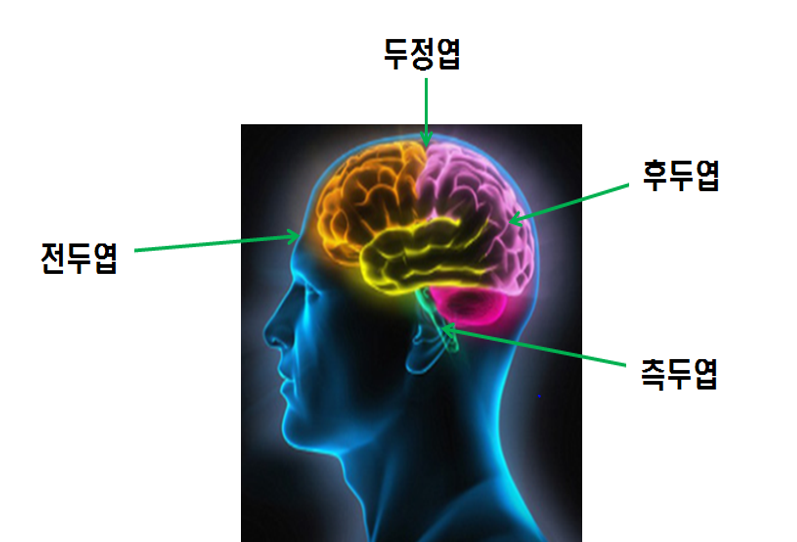
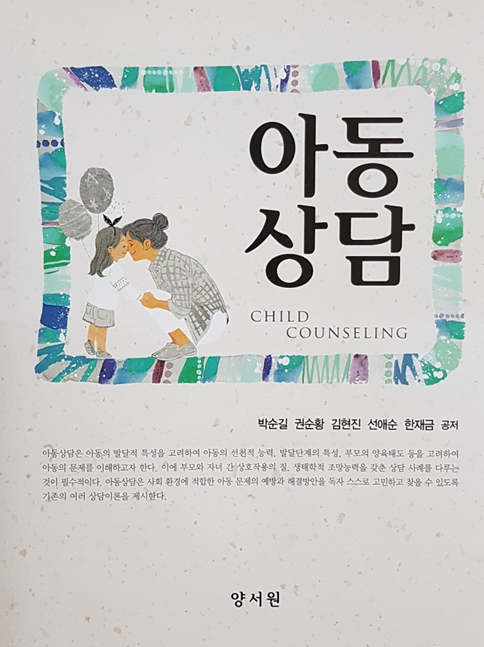

정신분석이론에 의한 상담은 아동의 무의식에 묻혀있는 심리적 상처나 욕망, 갈등에 접근하여 자아(ego)가 새롭게 통찰력을 형성하기 위한 방법을 사용한다. 주로 사용하는 상담 기법으로 자유연상, 전이의 분석, 저항의 분석, 안아주기, 해석하기 등이 있다.

1) 자유연상
자유연상(free association)은 무의식에 있는 자신의 생각과 갈등을 의식수준으로 끌어올리기 위해 사용되는 기법이다. 아동으로 하여금 편안한 자세를 취한 후 어떤 대상과 관련하여 마음에 떠오르는 생각, 감정, 기억을 자유롭게 이야기하도록 해야한다. 상담자는 아동에게 아무리 고통스럽고 부적절한 것일지라도 떠오르는 것을 많이 이야기해 달라고 한다. 자유연상은 아동의 내면에 존재하는 무의식적 소망, 환상, 갈등, 충동 등 과거의 억압 및 차단된 다양한 감정을 경험하게 한다. 아동이 자유롭게 연상하려고 노력하는 동안 상담자는 중립적인 태도를 취하고 퇴행이 일어나도록 한다.
정신분석상담에서 가장 핵심적인 자유연상은 저항에 부딪치면 제대로 사용되기 어렵게 된다. 이때는 저항을 분석함으로써 자유연상이 제대로 사용되도록 도와주어야 한다. 자유연상을 하는 과정에서 증상과 관련된 과거의 경험이나 기억들이 차츰 드러나게 되며 상담자는 이를 통해 아동의 증상이 무의식적으로 어떤 의미를 지니는지 문제의 원인이 되는 단서를 찾는다.
2) 전이
전이(transference)는 아동이 상담자에게 느끼는 현재의 감정이나 사고를 의미한다. 아동은 부모나 다른 성인들에게 경험했던 감정, 불안, 욕망, 기대 등을 현재의 상황에서 상담자에게 충족하려 하거나 반복하려고 투사하는 것을 의미한다. 이를 통해 아동은 과거경험에서 중요한 타인과의 관계, 특히 부모-자녀 간에 이루어졌던 관계 경험과 관련된 다양한 감정을 재경험하며 해소하고 통찰하면서 오랫동안 지속되어 온 자신의 행동양식을 바꿀 수 있다. 아동은 전이의 분석을 통해 현재 자신의 적응에 영향을 미치고 있는 과거 경험을 통찰하게 된다.
아동은 의미있는 대상(주로 부모)과의 관계에서 느끼는 감정， 신념， 욕망을 떠오르게 하여 이해시킨다. 상담자 측면에서도 자신의 경험과 관련된 무의식적 충동과 감정으로 인해 아동에 대한 개인적 편견이나 갈등을 경험하는 비합리적 치료반응인 역전이(counter transference)가 일어나기 때문에 상담의 객관성을 저해할 수 있다(정문자 외, 2013). 그러므로 상담자는 자기분석과 지도감독을 통하여 자신의 주요한 무의식적 갈등을 미리 해결하거나 상담할 때 나타난 역전이를 발견하고 자신의 욕구나 갈등을 분리하는 작업을 해야 한다.
3) 저항
저항(resistance)은 아동에게 위협이 되는 그 어떤 것을 의식에 떠오르지 않게 하려는 것이다. 즉, 상담 진행을 방해하고 현재 상태를 유지하려는 의식적 혹은 무의식적 생각, 태도, 감정, 행동을 의미한다. 아동이 현재의 상태를 그대로 유지하려고 상담 진행을 방해하고자 억압했던 무의식적 자료를 의식의 표면으로 드러내는 것을 주저하는 것이다. 아동이 저항을 보이는 근본적인 이유는 불안이나 죄책감 또는 수치심 같은 고통스러운 감정이 드러나는 것에 대한 불안으로부터 자신을 보호하기 위해 발생한다.
아동의 저항은 고통스러운 문제에 대해 침묵하기, 큰소리 내기, 산만하고 공격적 행동하면서 그 문제에 집중하지 못하도록 한다. 대부분의 아동은 자신의 고통스럽고 두려워서 직면하기 어려운 내면적 문제를 회피하려고 한다. 이러한 저항은 아동의 의식수준에서 나타나기도 하고 무의식 수준으로 자신이 저항하고 있음을 깨닫지 못한 채 일어나기도 한다. 상담자는 아동이 보이는 명백한 두려움이나 불안 등 저항에 대해 인식하고 아동 자신의 방어기제와 저항의 원인 및 영향을 스스로 이해할 수 있도록 한다.
4) 안아주기
안아주기(holding)는 정신분석 상담 중 대상관계이론에서 주로 사용되는 기법으로 상담자가 아동의 치료관계를 형성하기 위하여 가져야할 치료적 태도이다. 이는 어머니가 자녀의 욕구와 내적인 심리상태를 민감하게 알아차려서 적절하게 일관적인 반응을 제공하여 아동이 스스로 사랑받는 존재라고 느끼게 해주는 것이다. 이러한 태도는 좋은 어머니(good-enough mother)가 제공하는 안아주는 환경(holding environment)을 아동이 재경험하여 심리적으로 새로운 탄생을 할 수 있도록 돕는다.
아동과 상담자와의 관계에서 일관되게 안아주기를 경험하게 되면 아동도 자신과 타인을 깊이 있게 이해하고 안아주는 능력(holding capacity)을 증진시킬 수 있다. 안아주기는 언어적 수단뿐만 아니라 아동 경험에 대한 깊이 있는 이해와 수용적 태도, 상담과정에서 아동이 보이는 불안이나 정서적 갈등을 충분히 받아 줄 수 있음을 아동에게 보여주는 것까지 포함한다.
5) 해석
해석(interpretation)은 상담자가 자유연상이나 저항, 전이 등에서 나타난 아동의 꿈, 자유연상, 저항, 전이 등의 의미를 설명해 주는 것이다. 이러한 해석을 통해 아동은 문제를 일으킨 무의식적인 내용을 깨닫고 인정하도록 촉진하는 방법이다. 상담자는 아동이 표현했던 생각, 감정 혹은 행동 등 의식하지 않았던 의미 혹은 이유를 이해하고 받아들일 수 있도록 한다. 그러나 아동이 해석을 전달하는 시점과 방식을 신중히 고려해야 한다.
해석을 하려면 다음을 주의해야 한다.
첫째, 상담자가 해석을 시도하는 시기가 적절해야 한다. 아동이 의식적으로 인지하지도 못한 시점에서 성급하게 해석하 게 되면 아동은 해석할 내용을 거부하여 저항할 수 있다.
둘째, 해석은 아동의 표면적인 것부터 시작하여 정서적, 심리적으로 수용할 수 있을 깊이까지 한다.
셋째, 의식적 감정이나 갈등을 해석하기 전에 상담에 협조하지 않는 저항이나 방어기제를 우선 지적하여 해석한다.
이외 꿈의 분석은 자유연상과 마찬가지로 아동의 무의식 세계에 접근할 수 있는 방법이다. 잠잘 때 꾸는 꿈은 아동의 방어기제가 약화되어 억압된 욕망과 갈등이 의식의 표면에 떠오르는데 이러한 특성을 활용하여 아동으로 하여금 자신이 가진 심리적 갈등을 통찰하게 한다.
이와 같이 정신분석 상담은 아동이 인지하지 못하고 수용할 수 없는 충동들에 의하여 사고나 행동이 동기화된다는 사실을 밝혀준다. 즉, 무의식에 잠재된 생각과 감정을 구체화하고 앞으로 탐색되어야 할 부분에 관심을 집중시키며 핵심적인 주제를 가려내거나 이해가 더 잘 되도록 요약하는데 사용한다.
2021.11.28 - [분류 전체보기] - 프로이드의 발달 이론- 심리성적 발달 5단계
프로이드의 발달 이론- 심리성적 발달 5단계
심리성적 발달 5단계 프로이드(Sigmund Freud)는 성격발달 과정에서 중요한 영향을 미치는 성 에너지인 리비도의 과잉 및 충족 또는 좌절 및 고착에 따라 성격발달에 중요한 영향을 미친다고 주장
think-sis.tistory.com
출처: 박순길 외 공저(2017). 아동상담 3장 정신분석 상담의 주요 이론 중에서
